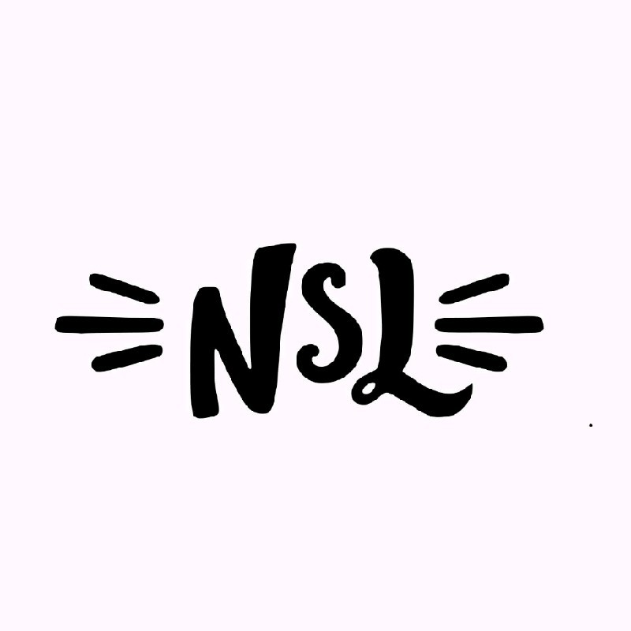
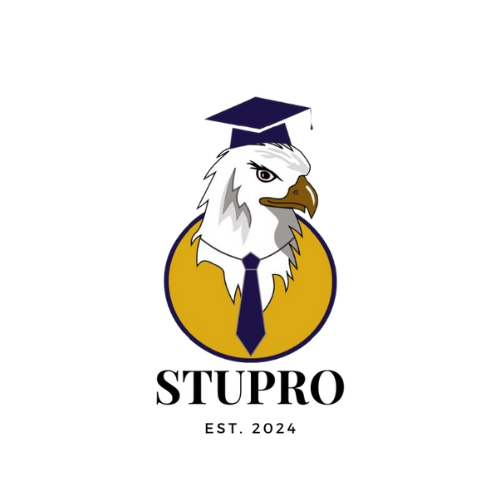
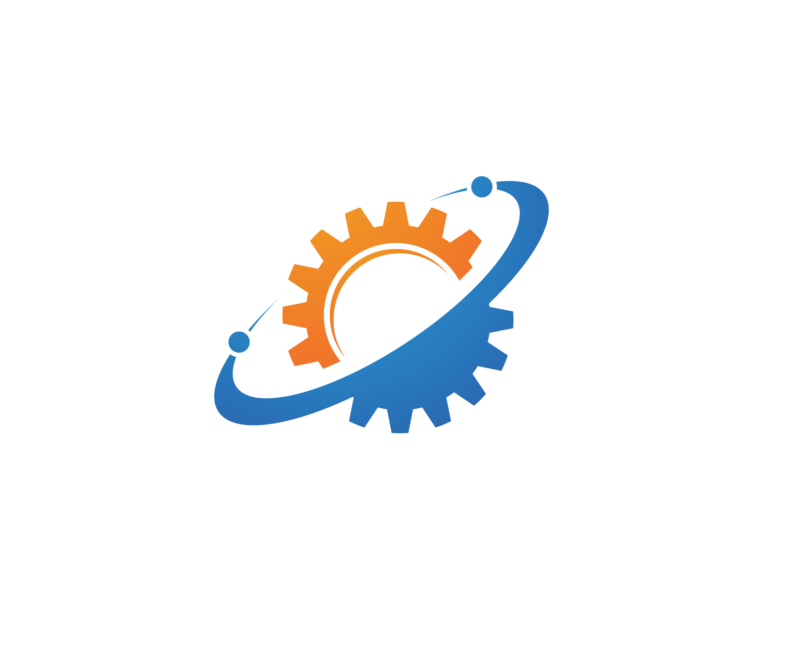

About Me
I’m not here to sugarcoat things—I’m just a normal human with an abnormal hunger.
A hunger for knowledge, for creation, for that one breakthrough that makes me feel like I’ve carved
my mark into time.
Yes, I’m a developer. Yes, I’ve built IoT projects, played with web technologies, and chased
countless ideas in college. But beyond the code, I’m also an artist. My mind doesn’t see tech as
wires and syntax—it sees shapes, patterns, and stories waiting to be told through innovation.
Truth
I carry a heavy sin: Greed.
Not for money.
Not for fame.
But for knowledge.
If I don't achieve it,
Wrath takes over.
If I delay it,
Sloth tempts me.
If I consume too much at once,
Gluttony burns me out.
When I finally achieve something,
Pride sneaks in.
And when I see someone ahead of me,
Envy fuels me again.
I'm a storm of contradictions,
but all of it pushes me in one direction—
forward.
What Drives Me
Knowledge. Not specific, not limited—everything.
I thrive in the chase. The unknown excites me more than the known.
My motto?
Those who strive for knowledge will thrive against time.
That’s who I am. Not perfect, not polished—but endlessly driven.
One field I’m especially drawn to is Game AI research—the art of creating intelligence that feels alive, and the science of exploring worlds yet to be discovered. For me, it’s more than just games; it’s about exploring the unexplored universe of intelligence and imagination.
Projects
ProtecWatch
Worked on a project related to IoT
Stupro
Worked on a project related to App development
SLT
Worked on a project related to Machine Learning
Blogs
🌃Axios in React: The Joyful Guide to Painless API Calls
🌱 I Found My New Favorite Way to Manage State: Jotai is Magic in Atoms!
🦚Zustand : The Tiny State Manager That Quietly Saved My Sanity
Contact
Contact me at: